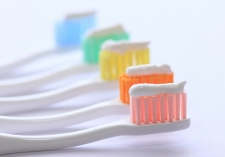

茨城県牛久市神谷 ・ フードスクエアカスミ牛久店内
牛久カスミ とおる歯科クリニック
歯科一般 ・ 小児歯科 ・ 矯正歯科 ・ 歯科口腔外科
安全、清潔、安心。
患者様の医療安全を第一に考え、安心して診療を受けられる、通える、行ってよかったと思える歯医者さんでありたいと思っています。
当院のご案内
当院では、患者様の医療安全を第一に考えております。その上で、安心して診療を受けられる、通える、行ってよかったと思える歯医者さんでありたいと思っています。よろしくお願いいたします。
院長：小川 徹

診療科目・診療内容
診療科目
- 歯科一般
- 小児歯科
- 矯正歯科
- 歯科口腔外科
診療内容
- 予防歯科
- ホワイトニング
- 義歯
- 歯周病
診療時間
| 診療時間 | 月 | 火 | 水 | 木 | 金 | 土 | 日 |
|---|---|---|---|---|---|---|---|
| 午前 | ○ | ○ | ／ | ○ | ○ | ○ | ○ |
| 午後 | ○ | ○ | ／ | ○ | ○ | ○ | ○ |
- 平日：午前9:00〜13:00 ／ 午後14:30〜18:30
- 土日：午前9:00〜13:00 ／ 午後14:00〜16:00
- 休診：水曜日・祝日（臨時休診はホームページにて前もってお知らせします）
- 受診される方は保険証をお持ち下さい。
- 当院は予約制となっております。急患の方はまずお電話でお問い合わせください。
交通のご案内・アクセス
- 名称
- 牛久カスミ とおる歯科クリニック
- 住所
- 〒300-1216 茨城県牛久市神谷6-1-3 フードスクエアカスミ牛久店内
- お車で
- カスミフードスクエア牛久店内
お知らせ
矯正無料相談日
- 12月12日（土）9:00〜13:00
- 2027年 1月9日（土）9:00〜13:00
感染症対策について
当院では、コロナウイルス感染症に関する現状をふまえ、下記の方針にて対応致します。ご理解、ご協力の程よろしくお願い致します。
- 診療器具の患者様ごとの滅菌に加えて、院内全域の手指の触れる範囲を広く想定し、広範囲な消毒清拭を頻回に行っております。
- 歯科医師をはじめ全スタッフについて、出勤前の検温を徹底し、37.5℃以上の発熱がある場合は出勤を見合わせます。
- 状況により、予約時間が大幅に遅れる場合や、予告なく休診とさせていただく場合がございます。
- ご来院時には、事前に検温を含む体調管理をお願い致します。受付での検温をさせていただきます。
- 患者様およびご家族に感染が認められた場合には、ご来院を見合わせるとともに速やかなご連絡をお願い致します。
- マスクなどの感染予防品は、ご家庭でご用意お願いいたします。